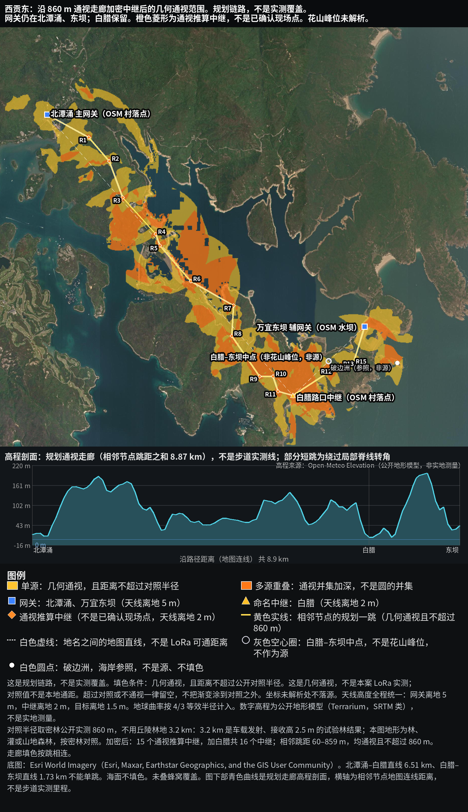
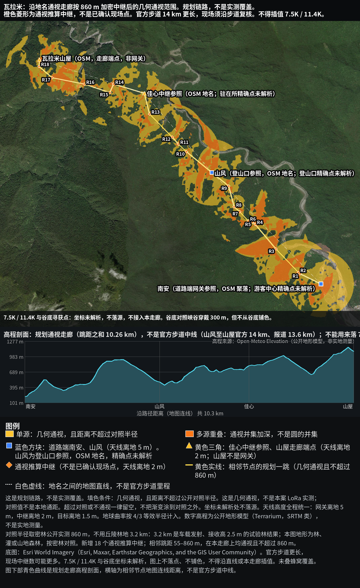

荒野搜救 LoRa mesh 通视规划
五处案例的网关和中继按几何通视布置。佩戴节点用卫星定位取得坐标，经 LoRa 逐跳送到道路端网关，再交到接收端。节点不内置蜂窝模块。链路中断时，接收端保留最后一次收到的位置和时间。
定位节点 → LoRa 中继 → 道路端网关 → 接收端
通视规则
数字高程用 Terrarium（SRTM 类）。地球曲率按 4/3 等效半径计入。天线高度：网关 5 m（离地），中继 2 m，目标 1.5 m。
只给同时具备几何通视、且平面距离不超过 860 m 的像素上色。填色边缘随地形曲折，不是圆。两个及以上源都能看见的像素颜色加深。脊线背坡、被挡住的谷底、被挡住的跨海和水面留空。
860 m 是密林对照，取自 Future Internet 2021（Ojo 等）：868 MHz，发射 10.4 dBm，SF12，最远点只有少量成功送达。论文。这不是本地实测通距。图上另行写出的丘陵林地 3.2 km，是车载发射、接收天线高 2.5 m 的试验林结果，不用作本图填色半径。
规划点由通视推算，不是已确认现场点。一跳只连接几何通视且平面距离不超过 860 m 的相邻节点。节点要能沿同一规则跳回至少一处有回传的路边或公路端网关。在这套规则下，规划链相连是必要条件，不足以说明实地可行。
底图是 Esri World Imagery。四张案例图下方的青色曲线是规划走廊高程剖面，横轴是相邻节点地图连线的距离，不是步道实测里程。剖面高程取图上标注的公开地形模型（Open-Meteo Elevation）。
图例
符号与五张图上的图例一致。
- 浅黄填色：单源几何通视，且平面距离不超过 860 m。边缘不规则，不是圆。
- 深橙填色：多源重叠，通视范围叠加后加深，不是圆的并集。
- 蓝色方块：网关，天线离地 5 m。
- 橙色菱形：通视推算中继，天线离地 2 m，不是已确认现场点。
- 黄色三角：具名点。西贡为白腊；瓦拉米为佳心与山屋；蒲台右幅为灯塔参考。
- 黄色实线：相邻节点的规划一跳（几何通视且不超过 860 m）。新娘潭图上这条线是绿色。
- 白色虚线：地名之间的地图直线，不是 LoRa 可通距离，也不是步道里程。
- 青色曲线：西贡、William、蒲台、瓦拉米四图下部的规划走廊高程剖面。
- 西贡：灰色空心圈是白腊–东坝中点，不是花山峰位，不是源。
- 白色圆点：参照，不是源。西贡为破边洲；William 为 Stoney Creek Road 路名，不是营地；蒲台为慈康邨、香港仔。
- William：红色空心圈是报道搜索重点，按堰西北约 6 km 的方位推算，不是源。红色虚线圆是以该点为中心的 1.5 km 地图参照，不是通视范围。
- 红色或浅色斜线：不上色。William 为搜索重点周边；蒲台左幅为隔岛有挡的海峡，不设跨海中继；新娘潭为缓冲内残余未覆盖。
- 新娘潭：浅蓝色线圈是 150 m 土地缓冲，不是官方「新娘潭地区」界。
- 新娘潭黄线：渔护署新娘潭自然教育径官方 GPX。
- 新娘潭橙线：至照镜潭的连接。
- 新娘潭浅色线：步道口路段与停车场。
- 新娘潭绿色实线：规划跳，几何通视且不超过 860 m。
- 新娘潭品红菱形：150 m 缓冲档增补中继（B3–B7），不是已确认现场点。橙色菱形是走廊档中继 A1、A2。
新娘潭图上文字标出巴士站、新娘潭瀑布、照镜潭瀑布。水面与 DEM 海平面不上色。瓦拉米图例写明谷底对照峡谷穿戴试验的 300 m，谷底不填色。蒲台左幅钓鱼翁周围的橙色虚线圆是 1.5 km 地图参照，不是通视；左幅黄色虚线是钓鱼翁至码头 15.1 km 的地图直线。
五处案例
直线距离由坐标文件中的具名点算出。860 m 重分配后的四条搜救走廊是西贡东、William、蒲台、瓦拉米。新娘潭是步道走廊的覆盖规划，没有对应的单起报道。
| 案例 | 网关 | 中继 | 本规则下已相连 | 未接入 |
|---|---|---|---|---|
| 西贡东 | 北潭涌（主），万宜东坝（辅） | 白腊 + 15 个推算中继，共 16 个 | 北潭涌–白腊–东坝，跳距之和 8.87 km，相邻 60.1–859.0 m | 花山峰位 |
| William | Cowwarr 镇区；堰为走廊节点 | 4 个推算中继 | 镇区–堰，跳距之和 3.73 km，相邻 541.3–852.5 m | 营地、寻获点、报道搜索重点 |
| 蒲台 | 岛上码头一处 | 1 个推算中继 | 码头–灯塔参考，跳距之和 1.02 km（431.3 m、591.8 m）。不设跨海链 | 钓鱼翁–码头跨海 |
| 瓦拉米 | 南安或山风道路端；本链起点在南安 | 佳心 + 18 个推算中继；山屋是端点，不是网关 | 南安–山风–佳心–山屋，跳距之和 10.26 km。官方步道 14 km，现场可能要更多中继 | 7.5K、11.4K、谷底 |
| 新娘潭 | 狮子亭路边 1 处 | 走廊 2 个；150 m 缓冲共 7 个 | 走廊约 1.9 km，土地覆盖 100%；150 m 缓冲 43.0557 公顷，覆盖 99.93%，残余 309.6 m² | 无官方地区多边形 |
西贡东
2026 年 5 月 25 日，约 100 人的队伍由白腊出发，经花山前往万宜东坝。当晚 22:15，警方接报三名男子在万宜路附近山径失联，救援在北潭涌集合。5 月 26 日 04:50 在山上寻获 76 岁的陈；73 岁的莫与 64 岁的潘已自行落山。三人均无须送院，消防于 11:05 停止动员。报道见 HK01（2026-05-26）。
860 m 重分配之后，网关仍在北潭涌和万宜东坝，天线离地 5 m。北潭涌是救援集合的郊野公园入口一侧，东坝是队伍原定终点的坝头。白腊保留为中继，天线离地 2 m。另有 15 个通视推算中继，连白腊共 16 个中继。
北潭涌至白腊直线 6.51 km，中间 11 个推算中继，12 跳，跳距 209.6–859.0 m，均几何通视且不超过 860 m。白腊至东坝直线 1.73 km，中间 4 个推算中继，5 跳，跳距 60.1–856.6 m，均几何通视且不超过 860 m。白腊至东坝有几跳很短，是为绕开局部脊线转角。两段跳距之和 8.87 km。北潭涌至东坝直线 6.66 km。
花山峰位没有解析出坐标，不落点，不接入。图上灰色空心圈是白腊与东坝的路径中点，不是花山峰位，也不是通视源。破边洲的白点是海岸参照，不是源。
频段按香港 920–925 MHz、HKCA 1078 核对。搜索队节点沿走廊转发，不计入上述 16 个中继。

| 节点 | 纬度 | 经度 | 离地 m | 上一跳 | 跳距 m | 通视且 ≤ 860 m |
|---|---|---|---|---|---|---|
| 北潭涌主网关 | 22.3973323 | 114.3190286 | 5.0 | — | — | — |
| 推算中继 R1 | 22.393787611709506 | 114.32611070898054 | 2.0 | 北潭涌主网关 | 827.9 | 是 |
| 推算中继 R2 | 22.390063617225714 | 114.32958193908132 | 2.0 | 推算中继 R1 | 546.7 | 是 |
| 推算中继 R3 | 22.384341477482863 | 114.33187898272513 | 2.0 | 推算中继 R2 | 678.7 | 是 |
| 推算中继 R4 | 22.37860110889813 | 114.33745540039604 | 2.0 | 推算中继 R3 | 858.0 | 是 |
| 推算中继 R5 | 22.376831445522605 | 114.33815671075399 | 2.0 | 推算中继 R4 | 209.6 | 是 |
| 推算中继 R6 | 22.37119746040339 | 114.34341801257438 | 2.0 | 推算中继 R5 | 827.7 | 是 |
| 推算中继 R7 | 22.367404220761554 | 114.35069522623883 | 2.0 | 推算中继 R6 | 859.0 | 是 |
| 推算中继 R8 | 22.36261024843382 | 114.35037043132604 | 2.0 | 推算中继 R7 | 534.1 | 是 |
| 推算中继 R9 | 22.35629208066611 | 114.35510158538818 | 2.0 | 推算中继 R8 | 854.6 | 是 |
| 推算中继 R10 | 22.356307223799437 | 114.35741901397705 | 2.0 | 推算中继 R9 | 238.3 | 是 |
| 推算中继 R11 | 22.353925813790998 | 114.35824362608957 | 2.0 | 推算中继 R10 | 278.0 | 是 |
| 白腊中继 | 22.3532804 | 114.3607651 | 2.0 | 推算中继 R11 | 269.1 | 是 |
| 推算中继 R12 | 22.35749789211584 | 114.36773507256623 | 2.0 | 白腊中继 | 856.6 | 是 |
| 推算中继 R13 | 22.3578851731051 | 114.3688692994823 | 2.0 | 推算中继 R12 | 124.3 | 是 |
| 推算中继 R14 | 22.35806889969991 | 114.36941872087027 | 2.0 | 推算中继 R13 | 60.1 | 是 |
| 推算中继 R15 | 22.358258331074826 | 114.37101632664735 | 2.0 | 推算中继 R14 | 165.6 | 是 |
| 万宜东坝辅网关 | 22.364084 | 114.3729303 | 5.0 | 推算中继 R15 | 677.0 | 是 |
推算中继的来源字段为「由通视推算，不是已确认现场点」。
William
William，17 岁，姓氏未公布。2026 年 11 月 6 日约 16 时在维多利亚州 Gippsland 的 Walhalla East 一带失踪，11 月 12 日由警方直升机在陡峭河床寻获并吊出。手机、食物和水留在营地。公开报道把搜索重点放在 Cowwarr Weir 西北约 6 km，寻获位置写在 Stoney Creek 以东约 2 km。营地、寻获点和搜索重点都没有可写入坐标文件的确认点。轨道名称在报道里不一致，ABC 图说写 W2 Track，7NEWS 写 T2 track，本规划不据此选点。报道见 ABC（2026-11-11）、ABC（2026-11-12）、7NEWS（2026-11-12）。
860 m 重分配之后，网关留在 Cowwarr 镇区，天线离地 5 m，对应镇区指挥集结点一侧。堰保留为走廊节点，天线离地 5 m，图上与镇区同为蓝色方块，不是第二条必须的网关。镇区至堰直线 3.66 km，中间 4 个推算中继，5 跳，跳距 541.3–852.5 m，均几何通视且不超过 860 m。跳距之和 3.73 km。
报道搜索重点在图上按堰西北约 6 km 的方位画成红圈，不是确认坐标，不是源。以其为中心的 1.5 km 红色虚线圆是地图参照，不是通视范围。红色斜线区不上色。Stoney Creek Road 的白点是路名参考，不是营地。营地、寻获点和搜索重点都不接入这条走廊。
频段按澳洲 915–928 MHz、LIPD 类许可 核对。挂件在人身上计位，不依赖留在营地的手机。

| 节点 | 纬度 | 经度 | 离地 m | 上一跳 | 跳距 m | 通视且 ≤ 860 m |
|---|---|---|---|---|---|---|
| Cowwarr 镇区网关 | -38.0140074 | 146.6964831 | 5.0 | — | — | — |
| 推算中继 R1 | -38.00979068081499 | 146.68838024139404 | 2.0 | Cowwarr 镇区网关 | 850.8 | 是 |
| 推算中继 R2 | -38.00938276908597 | 146.68222360981156 | 2.0 | 推算中继 R1 | 541.3 | 是 |
| 推算中继 R3 | -38.00532717973853 | 146.67396621594833 | 2.0 | 推算中继 R2 | 852.5 | 是 |
| 推算中继 R4 | -38.00172355511777 | 146.66720433259286 | 2.0 | 推算中继 R3 | 715.2 | 是 |
| Cowwarr Weir 节点 | -37.9999195 | 146.6587103 | 5.0 | 推算中继 R4 | 770.8 | 是 |
蒲台
2021 年 10 月 28 日上午，31 岁王苑华离开慈云山慈康邨后失联。他曾计划去钓鱼翁，也曾想去飞鹅山，两趟都取消。救援先在西贡钓鱼翁一带搜索。约 10 月 31 日 02:00，确认手机信号在 28 日 12:00 和 15:00 显示于蒲台岛，搜索才转到岛上，并有直升机。截至 11 月 1 日的公开报道没有寻获结果。报道见 东方日报（2021-11-01）。
860 m 重分配之后，只保留岛上码头一处网关，天线离地 5 m，加 1 个推算中继，接到灯塔参考端点。不设钓鱼翁至码头的跨海链。图上钓鱼翁至蒲台码头的地图直线为 15.1 km，至岛上灯塔参考为 15.7 km。这段隔岛有挡，海峡不填色，不能靠加密中继连成逐跳链路。钓鱼翁的坐标不在坐标文件里，左幅不把它当作跨海源；周围 1.5 km 橙色虚线圆是地图参照，不是通视范围。慈康邨和香港仔的白点是参照，不是源。
岛上码头至灯塔参考直线 0.87 km，中间 1 个推算中继，2 跳，跳距 431.3–591.8 m，均几何通视且不超过 860 m。跳距之和 1.02 km。灯塔是走廊端点，不是岛心，也不是网关，天线离地 2 m。
频段按香港 920–925 MHz、HKCA 1078 核对。

| 节点 | 纬度 | 经度 | 离地 m | 上一跳 | 跳距 m | 通视且 ≤ 860 m |
|---|---|---|---|---|---|---|
| 蒲台码头网关 | 22.1633438 | 114.2530887 | 5.0 | — | — | — |
| 推算中继 R1 | 22.16216534596124 | 114.25707864623519 | 2.0 | 蒲台码头网关 | 431.3 | 是 |
| 岛上灯塔参考（路径端点，非岛心） | 22.1568833 | 114.2577833 | 2.0 | 推算中继 R1 | 591.8 | 是 |
瓦拉米
2026 年 4 月 11 日，6 人队伍走瓦拉米步道。一名 70 岁山友在约 11.4 公里处与队伍分开后失联，一带为滑坡落石区。4 月 19 日在 7.5 公里处山谷下寻获。公开报道未写全名。搜救中用过无人机看深谷。报道见 中央社（2026-04-19）。官方步道由山风口至瓦拉米山屋约 14 km（玉山国家公园管理处）。中央社写单程约 13.6 km，7K 之后须申请入园。
860 m 重分配之后，道路端网关放在南安或山风。本链的起点网关是南安，天线离地 5 m。山风是走廊上的 5 m 具名节点，图上作登山口参照，精确登山口未解析。佳心是具名中继，天线离地 2 m。另有 18 个推算中继，沿 OSM 地名走廊排到山屋。山屋是步道端点，不是网关，天线离地 2 m。主网关不下谷底。
南安至山风直线 4.07 km，中间 9 个推算中继，10 跳，跳距 55.1–846.5 m，均几何通视且不超过 860 m。山风至佳心直线 2.71 km，中间 4 个推算中继，5 跳，跳距 243.5–854.9 m，均几何通视且不超过 860 m。佳心至山屋直线 2.87 km，中间 5 个推算中继，6 跳，跳距 172.2–859.8 m，均几何通视且不超过 860 m。三段跳距之和 10.26 km。山风至山屋直线 5.37 km。官方步道 14 km，长于这条地名连线，现场中继可能更多。部分短跳用于绕开局部脊线转角。
7.5K、11.4K 和谷底没有解析出坐标，图上不落点，不从谷底上色，不接入本走廊。不得沿地名直线或本走廊插值这两个里程点。图例写明谷底对照峡谷穿戴试验的 300 m。
频段按台湾 920–925 MHz、LP0002 室外 0.5 W 核对。

| 节点 | 纬度 | 经度 | 离地 m | 上一跳 | 跳距 m | 通视且 ≤ 860 m |
|---|---|---|---|---|---|---|
| 南安道路端网关 | 23.3011979 | 121.2584273 | 5.0 | — | — | — |
| 推算中继 R1 | 23.30357924165954 | 121.25307660786166 | 2.0 | 南安道路端网关 | 607.2 | 是 |
| 推算中继 R2 | 23.30392968900793 | 121.25269502311755 | 2.0 | 推算中继 R1 | 55.1 | 是 |
| 推算中继 R3 | 23.3094006192945 | 121.24693149669633 | 2.0 | 推算中继 R2 | 846.5 | 是 |
| 推算中继 R4 | 23.31518325776607 | 121.24160818325174 | 2.0 | 推算中继 R3 | 842.0 | 是 |
| 推算中继 R5 | 23.315693871706046 | 121.24090959448722 | 2.0 | 推算中继 R4 | 91.2 | 是 |
| 推算中继 R6 | 23.315989748532747 | 121.23982030142736 | 2.0 | 推算中继 R5 | 116.0 | 是 |
| 推算中继 R7 | 23.318154885952588 | 121.23765170269905 | 2.0 | 推算中继 R6 | 327.1 | 是 |
| 推算中继 R8 | 23.319300161735576 | 121.23621537999213 | 2.0 | 推算中继 R7 | 194.2 | 是 |
| 推算中继 R9 | 23.32415177204756 | 121.23484064093475 | 2.0 | 推算中继 R8 | 557.4 | 是 |
| 山风节点 | 23.3273643 | 121.230497 | 5.0 | 推算中继 R9 | 569.5 | 是 |
| 推算中继 R10 | 23.332190746157302 | 121.22397958382817 | 2.0 | 山风节点 | 854.9 | 是 |
| 推算中继 R11 | 23.333991560048965 | 121.22195445882824 | 2.0 | 推算中继 R10 | 287.8 | 是 |
| 推算中继 R12 | 23.335651538904326 | 121.22039961586518 | 2.0 | 推算中继 R11 | 243.5 | 是 |
| 推算中继 R13 | 23.341052253962026 | 121.21458583267042 | 2.0 | 推算中继 R12 | 844.4 | 是 |
| 佳心中继 | 23.345896 | 121.2132167 | 2.0 | 推算中继 R13 | 556.4 | 是 |
| 推算中继 R14 | 23.348047936958082 | 121.20533466339111 | 2.0 | 佳心中继 | 839.5 | 是 |
| 推算中继 R15 | 23.346053861562936 | 121.20443184499265 | 2.0 | 推算中继 R14 | 240.1 | 是 |
| 推算中继 R16 | 23.348047936958082 | 121.19786739349365 | 2.0 | 推算中继 R15 | 705.9 | 是 |
| 推算中继 R17 | 23.349562972411473 | 121.18960901859214 | 2.0 | 推算中继 R16 | 859.8 | 是 |
| 推算中继 R18 | 23.35220299877597 | 121.18629821930756 | 2.0 | 推算中继 R17 | 447.7 | 是 |
| 瓦拉米山屋（步道端点，非网关） | 23.3537493 | 121.1863941 | 2.0 | 推算中继 R18 | 172.2 | 是 |
新娘潭
没有官方「新娘潭地区」多边形。本段不依附某一则搜救报道，走廊按渔护署新娘潭自然教育径、至照镜潭的路径和步道口道路划定。邻近的官方郊野公园是船湾郊野公园和八仙岭郊野公园。走廊不含整条八仙岭自然教育径、乌蛟腾村街、大美督，也不含新娘潭路南段烧烤区。
线状走廊：官方 GPX 900.1 m（教育径页面标注约 0.7 km），至照镜潭连接 232.9 m，步道口道路 636.5 m，步道口连接路径 128.7 m。这四段合计 1898.2 m，约 1.9 km。邻近停车场路径另 272.8 m。全部计入后走廊长 2171.0 m。走廊半宽 15.0 m，土地 50617.4 m²（5.0617 公顷）。1 个网关加 2 个中继，这块土地的通视覆盖为 100%，残余 0。
非正式 150 m 土地缓冲把上述走廊、新娘潭、照镜潭、譅龙潭的水面边界，以及步道口与景点设施点向外扩 150 m，再去掉水面和 DEM ≤ 0.5 m 的像素。缓冲土地 430556.6 m²（43.0557 公顷，约 43 公顷）。同一网关加 7 个中继，覆盖 430247.0 m²，即 99.93%，残余 309.6 m²（约 310 m²），1 块、4 个 DEM 像素。残余质心 22.504905°N，114.235368°E，高程 81.3–87.1 m。浅蓝色线圈是这圈 150 m 缓冲，不是官方边界。黄线是渔护署官方 GPX。
这些覆盖数字是本规则下的规划下界，不是实测通距。
网关在狮子亭路边，22.503112°N，114.236768°E，天线离地 5 m，对应 OSM 节点 2171206021。走廊档中继 A1 距网关 391.2 m，A2 距网关 121.8 m。缓冲档在此之外增加 B3 至 B7。
径与地名来源：渔护署教育径，官方 GPX，地政总署地图，地质公园新娘潭。

走廊档
| 节点 | 纬度 | 经度 | 离地 m | 地面高程 m | 上一跳 | 跳距 m | 本步新增覆盖 m² |
|---|---|---|---|---|---|---|---|
| 网关（狮子亭路边） | 22.503112 | 114.236768 | 5.0 | — | — | — | — |
| 推算中继 A1 | 22.503759561748183 | 114.24051143643234 | 2.0 | 64.4 | 网关（狮子亭路边） | 391.2 | 21284.1 |
| 推算中继 A2 | 22.5022056411579 | 114.2374334181844 | 2.0 | 77.1 | 网关（狮子亭路边） | 121.8 | 387.0 |
150 m 缓冲档
缓冲档含走廊档的网关、A1、A2，以及 B3–B7。品红菱形是 B3–B7。
| 节点 | 纬度 | 经度 | 离地 m | 地面高程 m | 上一跳 | 跳距 m | 本步新增覆盖 m² |
|---|---|---|---|---|---|---|---|
| 网关（狮子亭路边） | 22.503112 | 114.236768 | 5.0 | — | — | — | — |
| 推算中继 A1 | 22.503759561748183 | 114.24051143643234 | 2.0 | 64.4 | 网关（狮子亭路边） | 391.2 | 21284.1 |
| 推算中继 A2 | 22.5022056411579 | 114.2374334181844 | 2.0 | 77.1 | 网关（狮子亭路边） | 121.8 | 387.0 |
| 推算中继 B3 | 22.503254557522755 | 114.24221245399292 | 2.0 | 127.2 | 网关（狮子亭路边） | 559.5 | 60677.4 |
| 推算中继 B4 | 22.500341772713995 | 114.23945055360717 | 2.0 | 53.3 | 推算中继 A1 | 395.4 | 31656.5 |
| 推算中继 B5 | 22.504673690916285 | 114.23489015099358 | 2.0 | 104.0 | 推算中继 A2 | 378.9 | 25695.0 |
| 推算中继 B6 | 22.505576644970454 | 114.24105210880005 | 2.0 | 114.9 | 推算中继 B3 | 284.4 | 14782.2 |
| 推算中继 B7 | 22.50034554501351 | 114.2399173239726 | 2.0 | 29.5 | 推算中继 B4 | 48.0 | 1780.2 |
坐标未解析、未接入
- 西贡花山峰位。灰色空心圈只是白腊–东坝中点。
- William 的营地、寻获点、报道搜索重点。图上的红圈是方位推算，不是确认坐标。
- 钓鱼翁至蒲台码头的跨海段。15.1 km 地图直线不加密成跨海链路，海峡不填色。
- 瓦拉米 7.5K、11.4K 与谷底。图上不落点，不从谷底上色。官方步道 14 km，长于本走廊的 10.26 km 地名连线，现场中继可能更多。